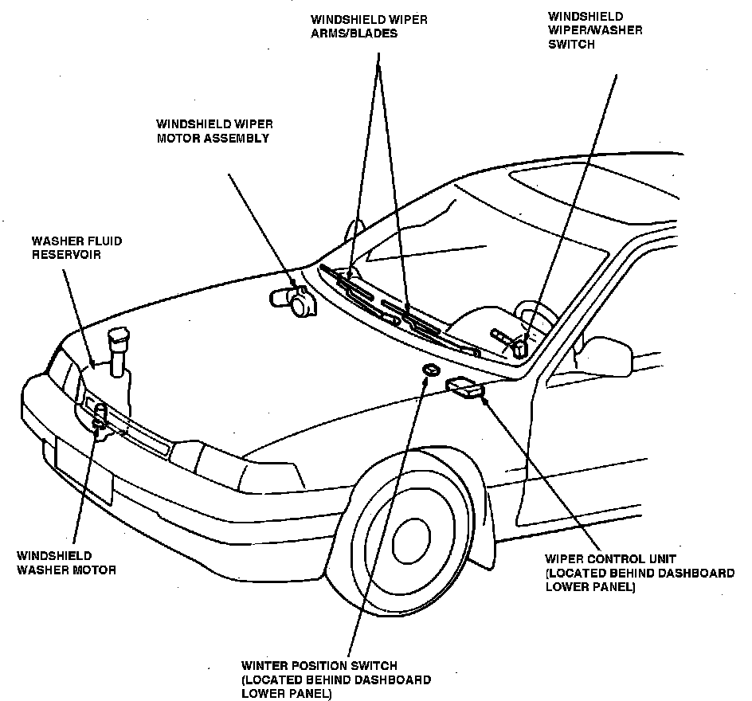

Operation CHARM
: Car repair manuals for everyone.
Home
>>
Acura
>>
1988
>>
Legend Sedan V6-2675cc 2.7L SOHC FI
>>
Repair and Diagnosis
>>
Wiper and Washer Systems
>>
Sensors and Switches - Wiper and Washer Systems
>>
Wiper Switch
>>
Locations
Wiper Switch: Locations
Wiper/Washer Components.:

At Trim Panel, Below Steering Column
Applicable to: 1988 Legend